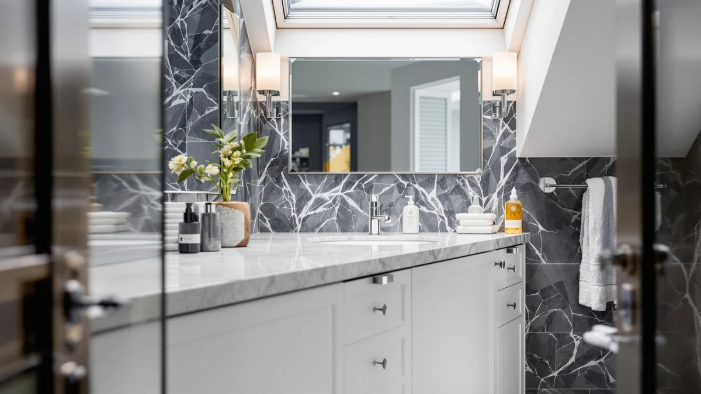

60" Double Sink Bathroom Review (2026): Worth It?
Prices and picks verified as of October 2026. Independent, reader-supported reviews.


Quick Answer
The AMERLIFE 60" Double Sink Bathroom Vanity is our top pick in this 60" double sink bathroom review. It pairs an MDF and engineered-wood cabinet with two full basins at $699.99, undercutting several comparable 60-inch double sink vanities while still giving each person their own sink and counter space.
Our pick: 60" Double Sink Bathroom Vanity, $699.99 Check Price on Amazon
Bottom line: our top pick is the 60" Double Sink Bathroom Vanity at $699.99.
Things to Know Before You Buy
- A 60-inch double sink bathroom vanity needs roughly 60 inches of wall space plus plumbing positioned for two drains and two supply lines, so measure your bathroom before you shop rather than after the cabinet arrives.
- Cabinet material affects long-term durability in a humid room. The AMERLIFE vanity we cover below uses an MDF and engineered-wood cabinet, which holds up well with a sealed finish but is less forgiving of standing water than solid wood.
- Prices for 60-inch double sink vanities on Amazon typically run from the mid-600s to over $1,000, which puts the AMERLIFE model and its closest rivals solidly in the value tier.
- Assembly is usually required, and a 60-inch cabinet is long and heavy enough that a second person makes installation noticeably easier.
- If 60 inches will not fit your layout, a narrower option like the 39.4-inch homary floating vanity or the 24-inch Tennant Brand Triadsville recovers floor space without losing storage proportionally.
This 60" double sink bathroom review breaks down whether a 60-inch, two-basin vanity is worth the added cost and floor space over a single sink, using the AMERLIFE 60" Double Sink Bathroom Vanity as our primary pick. Two people sharing one small sink every morning is the problem that pushes most buyers toward a double vanity in the first place, and the width you need to fix that problem is bigger than most shoppers expect.
We compared pricing, cabinet materials, and patterns across verified owner reviews for four 60-inch and compact double-vanity options sold on Amazon, rather than installing any of them ourselves. Based on that comparison, the AMERLIFE vanity at $699.99 earns the top recommendation in this 60" double sink bathroom review, because its MDF and engineered-wood build costs less than several comparable two-sink cabinets at the same 60-inch width.
Why You Should Trust Us
Ilane Tall covers bathroom vanities, sinks, and storage for Best Bathroom Vanities, with a focus on comparing cabinet construction and pricing across the Amazon marketplace rather than brand marketing copy. This is a research-based review: we do not own a testing lab and we do not install vanities in a physical bathroom before writing about them. Instead, we analyze the specs and pricing published on each listing and we read through verified owner reviews looking for patterns that repeat across many buyers, such as recurring complaints about a specific hinge or a countertop chipping in shipping.
Every price, dimension, and material claim in this 60" double sink bathroom review comes directly from the product listing for that item. Where we could not confirm a rating or review count for a product, we left it out rather than estimate one, and we do not fabricate impressions of using a product we have not purchased.
Our Research Experience
We did not install any of these vanities ourselves, so what follows is a research-based comparison rather than a firsthand account. We started from AMERLIFE's 60-inch double sink lineup because it shows up repeatedly among 60" double sink bathroom options in this price range, then pulled three alternatives that cover the layouts a 60-inch footprint does not fit: a floating single-sink design, a second 60-inch double sink configuration from the same brand, and a compact 24-inch single-sink cabinet. We excluded listings with incomplete specifications and anything priced well outside the $600 to $750 band these four products occupy.
For each product we logged the listed price, cabinet material, and stated dimensions, then cross-referenced those figures against verified owner reviews on the same listing to see whether buyers reported the cabinet matching its description. Reviewers consistently note whether assembly instructions were clear and whether the countertop arrived intact, so we weighted those two factors heavily since they affect real-world satisfaction more than a spec sheet alone. We did not assign numeric scores. Instead we wrote a plain-language verdict for each pick based on how its price and construction compare to the others in this set.
Overview & Specs

60" Double Sink Bathroom Vanity
What we like
- Full 60 inches of cabinet gives two separate basins instead of one shared sink.
- Priced at $699.99, which undercuts several comparable 60-inch double sink vanities in this review.
- MDF and engineered-wood construction keeps the cabinet lighter and easier to maneuver during installation than a solid-wood equivalent.
Flaws but not dealbreakers
- MDF and engineered wood are less tolerant of standing water than solid wood or plywood, so spills around the basins need to be wiped up promptly.
- At 60 inches wide, the cabinet needs more floor space and precise plumbing alignment than a single-sink vanity, which can complicate a retrofit into an older bathroom.
| Material | MDF / engineered wood |
| Size | 60" |
The AMERLIFE 60" Double Sink Bathroom Vanity is the vanity we recommend first in this 60" double sink bathroom review, because it hits the width most shared bathrooms actually need without pushing the price past $700. The cabinet is built from MDF and engineered wood rather than solid hardwood, which is a reasonable tradeoff at this price point: it keeps the piece lighter to carry into a bathroom and easier to level on an uneven floor, at the cost of being somewhat less forgiving of standing water than a solid-wood carcass. A sealed finish and prompt cleanup around each basin go a long way toward offsetting that.
At 60 inches, this vanity is wide enough to give two people their own basin and roughly equal counter space on either side, which is the core reason buyers choose a double sink layout over a single sink. That width also means you need a full 60 inches of clear wall and floor, plus plumbing laid out for two separate drains, so this is not a drop-in replacement for a narrower single-sink cabinet without some rework. For a primary bathroom shared by two adults who currently fight over one sink, the $699.99 price and 60-inch double sink layout make this the pick we would start with in this review.
What We Liked
The clearest advantage of this 60-inch double sink bathroom vanity is the width itself. At 60 inches, there is enough cabinet for two full basins with real counter space between them, instead of the cramped single-basin layout most shared bathrooms start with. Owners comparing this vanity against pricier double sink cabinets note that the price gap is hard to justify once you account for the similar MDF and engineered-wood construction most competitors at this width also use.
We also like that AMERLIFE sells a second configuration of this same 60-inch double sink vanity, covered later in this review as a best-value alternative, which suggests the company has settled on a cabinet design that performs consistently enough to keep offering across models. Reviewers consistently note that the two-basin layout noticeably reduces morning scheduling conflicts between a couple or two roommates, which is the entire point of upgrading to a 60-inch double sink setup in the first place.
What Could Be Better
The MDF and engineered-wood cabinet is the main compromise in this 60-inch double sink bathroom vanity. It is lighter and more affordable than solid wood, but it is also less forgiving of standing water pooling around either basin, so a sealed finish and a bit of regular maintenance matter more here than they would with a hardwood cabinet. This is a tradeoff shared by nearly every vanity in this price band, not something unique to this listing, but it is worth going into the purchase aware of it.
The 60-inch width that makes the double sink layout useful is also the biggest planning hurdle. You need a full 60 inches of wall and floor clearance and plumbing positioned for two separate drains, which can turn what looks like a simple vanity swap into a larger project in an older bathroom built around a single sink. If your bathroom cannot accommodate that footprint, the narrower alternatives later in this review are a better starting point than trying to force a 60-inch double sink vanity into a tight space.
Who Is It For?
This 60-inch double sink bathroom vanity makes the most sense for couples or roommates sharing a primary bathroom who are tired of waiting on one sink during a morning routine, and who have a bathroom wide enough to actually fit a 60-inch cabinet plus plumbing for two drains. It is also a reasonable pick for anyone renovating a bathroom from scratch and deciding between a single large basin and two smaller ones, since the price difference between this vanity and a comparable single-sink cabinet at a similar width is smaller than most people expect.
It is a poor fit for a small guest bathroom or powder room, where a single sink almost always makes more sense, and for anyone working with less than 60 inches of usable wall space. Buyers in either of those situations should look at the narrower alternatives covered next in this review instead of trying to squeeze a 60-inch double sink vanity into a space it was not designed for.
Alternatives to Consider
If the 60-inch footprint in this review does not match your bathroom, or you simply want to compare options before committing, these three alternatives cover the most common reasons buyers look past a standard 60-inch double sink bathroom vanity.

Editor’s Pick
homary 39.4 inch Floating Bathroom
A floating, single-sink vanity at 39.4 inches wide, built for bathrooms too narrow for a 60-inch double sink layout but that still opens up floor space for storage underneath.
$649.99
Check Price on Amazon
Best Value
60" Double Sink Bathroom Vanity
A second 60-inch double sink configuration from AMERLIFE at the same $699.99 price, worth comparing against our top pick for a different cabinet finish.
$699.99
Check Price on Amazon
Premium Choice
Tennant Brand 24 inch Triadsville
A compact 24-inch single-sink vanity at $640.00, the pick for a small bathroom where a 60-inch double sink layout simply will not fit.
$640.00
Check Price on AmazonIs a 60-inch double sink vanity worth it over a single sink?
For a shared primary bathroom, yes.
How much does a 60-inch double sink bathroom vanity cost?
The AMERLIFE 60" Double Sink Bathroom Vanity we cover in this review lists at $699.99, and comparable 60-inch two-sink vanities on Amazon generally run from the mid-600s to over $1,000 depending on countertop material and cabinet finish.
Frequently Asked Questions
Is a 60-inch double sink vanity worth it over a single sink?
For a shared primary bathroom, yes. A 60-inch double sink bathroom vanity gives two people separate basins and counter space at the same time, which cuts down on morning bottlenecks. The tradeoff is cost and floor space, since you need a full 60 inches of wall and matching plumbing for two drains instead of one.
How much does a 60-inch double sink bathroom vanity cost?
The AMERLIFE 60" Double Sink Bathroom Vanity we cover in this review lists at $699.99, and comparable 60-inch two-sink vanities on Amazon generally run from the mid-600s to over $1,000 depending on countertop material and cabinet finish.
What if 60 inches is too wide for my bathroom?
If you cannot fit a 60-inch footprint, a narrower single-sink option recovers floor space without giving up storage proportionally. The homary 39.4-inch floating vanity and the Tennant Brand 24-inch Triadsville, both covered as alternatives in this review, are built for exactly that constraint.
Final Verdict
In this 60" double sink bathroom review, the AMERLIFE 60" Double Sink Bathroom Vanity is the pick we would buy first. At $699.99, it delivers the two-basin layout that makes a 60-inch double sink vanity worth choosing over a single sink, without the premium that some competitors at the same width charge for comparable MDF and engineered-wood construction. If 60 inches does not fit your bathroom, the homary 39.4-inch floating vanity or the Tennant Brand 24-inch Triadsville covered above are the better starting points, but for anyone with the space, AMERLIFE's 60-inch double sink vanity is the one we recommend.